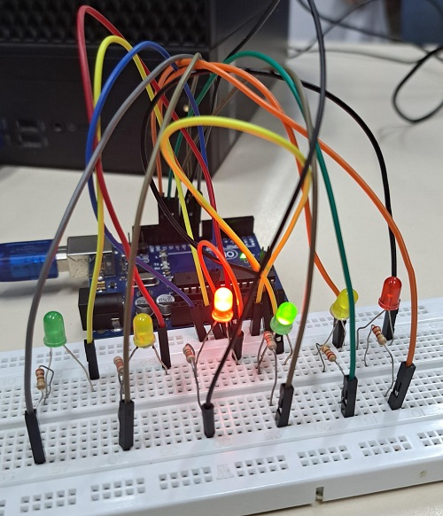
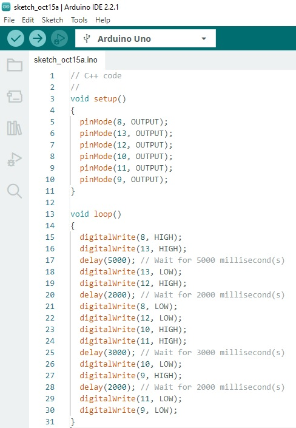

Criado dia: 17/10/2024
ARDUÍNO na prática – Semáforo Duplo

Vídeo montagem prática
Código C++ da IDE ARDUÍNO

Código C++
// C++ code
//
void setup()
{
pinMode(8, OUTPUT);
pinMode(13, OUTPUT);
pinMode(12, OUTPUT);
pinMode(10, OUTPUT);
pinMode(11, OUTPUT);
pinMode(9, OUTPUT);
}
void loop()
{
digitalWrite(8, HIGH);
digitalWrite(13, HIGH);
delay(5000); // Wait for 5000 millisecond(s)
digitalWrite(13, LOW);
digitalWrite(12, HIGH);
delay(2000); // Wait for 2000 millisecond(s)
digitalWrite(8, LOW);
digitalWrite(12, LOW);
digitalWrite(10, HIGH);
digitalWrite(11, HIGH);
delay(3000); // Wait for 3000 millisecond(s)
digitalWrite(10, LOW);
digitalWrite(9, HIGH);
delay(2000); // Wait for 2000 millisecond(s)
digitalWrite(11, LOW);
digitalWrite(9, LOW);
}